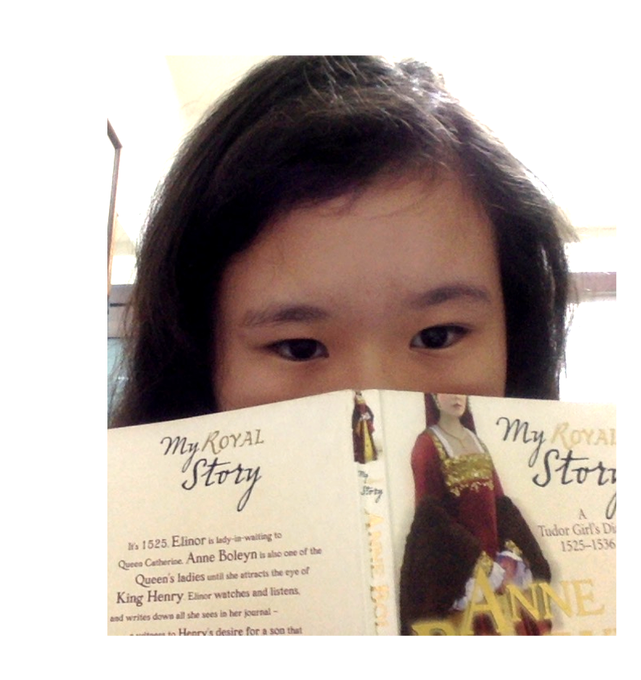

I love to read. I'm a fangirl, not Rebecca's type. I'm the type of weird mix between a MacKenzie/Drew Tanaka kind of person and a fangirl, meaning I will be polishing my nails while reading Harry Potter and not drop a single blob of polish on the book. Trust me, I've tried. I'm a drama queen, even though I have an *ahem, kind personality. I care about those around me, even if they hate me (cough, my friends and some boys, cough). That's because we've known each other for a long time, and even though we can't get past our differences, well... I might say rash things in times of anger, but I will never, ever do them, and mostly regret them afterwards.
I'm almost the opposite of Rebecca. I'm also writing a book, The Diadem of Souls, and I've already written 95 pages. Um... I might be posting the first few chapters, with Rebecca as editor, but I'm not sure yet. Like Bec, I live in Taiwan.
I love animals, and shopping. My favorite designer brands are Chanel and Hollister(Rebecca hates designer brands...). I hate spiders (something she and I both have a passionate and mutual hate for), and I love history, mostly European or Chinese. Again, I'm not an obsessive fangirl, but if you have any questions of ships or want me to write a fanfic, I'm more than happy to agree.
FAVORITE AUTHOR: JK Rowling // Rick Riordan // Cassandra Clare // Suzanne Collins // Valarie Wilding // Alison Prince // Phillipa Gregory // Homer // Shakespeare // Melissa De La Cruz
FAVORITE FOOD: Instant noodles // Chips // Tea // Chocolate
FAVORITE SERIES: HoO/PJO // Harry Potter
FAVORITE HOBBIES: Reading // Crafting // Pinterest // Running
FAVORITE ANIMALS: Dogs // Birds // Hamsters // Kitties

GMAIL: graciannathefangirl@gmail.com
PINTEREST: graciannathefan
TUMBLR: https://love-wisdom-knowledge.tumblr.com